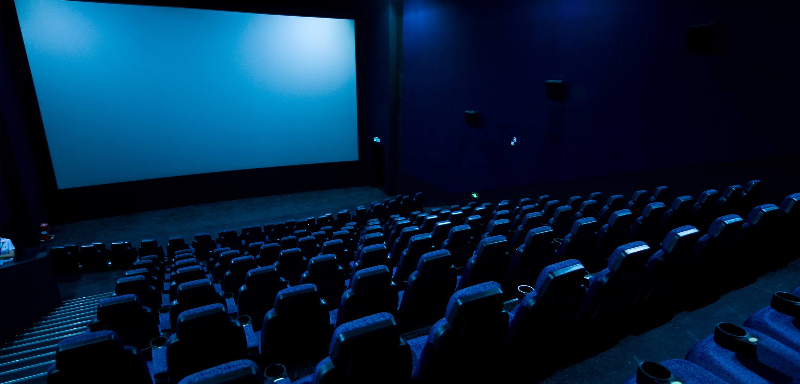

De ce nu? am putea răspunde spontan. Asta da întrebare! Te uiţi la filme aşa cum respiri şi cum mănânci (adesea în acelaşi timp).
Şi totuşi mulţi au încercat să dea un răspuns mai elaborat, cu atât mai mult cu cât filmul este cea mai populară artă, cum s-a spus adesea. Filmul este un fenomen de masă, spre deosebire de oricare altă artă surată. Literatura se citeşte în solitudine (exceptând lecturile publice, a căror modă din Vest începe să câştige public şi pe plaiurile mioritice). Pictura şi sculptura se admiră de obicei în muzee şi mai rar însoţiţi ori angajând un dialog. Muzica ne aduce în sălile de concerte, iar teatrul – în sălile teatrelor (când nu înaintea televizorului). Dar nu ajung nici pe departe la dimensiunile şi fidelitatea publicului de cinema.
De ce ne uităm aşadar la filme?
Un posibil răspuns vine dinspre psihanaliză, care ar fi ştiinţa sufletului, dacă sufletul ar putea avea o ştiinţă. S-a observat astfel că vizionarea unui film se apropie foarte mult de reverie. De visarea cu ochii deschişi din timpul zilei (de aceea reveria se şi numeşte, în limba engleză, day dreaming). Or, reveria este o cale nu întâmplătoare de acces la inconştient, adică la acea parte neştiută de obicei, cunoscută numai prin ceea ce ajunge în diferite forme “la suprafaţă”, în conştiinţă – ori, mai corect spus, în starea de conştienţă. În reverie apar la suprafaţă fantasmele cele mai intime, acele fantezii foarte personale de care poate că nu suntem conştienţi, ori nu prea conştienţi, ori nu foarte frecvent. Ca orice altceva care ajunge din inconştient la lumina conştiinţei, conştientizarea reveriilor este foarte utilă. De ce? Pentru că, dacă este adevărat că inconştientul – care, deşi prin definiţie neştiut de noi, ne aparţine şi ne reprezintă în cea mai mare măsură, este sinele nostru cel mai lăuntric – dacă este adevărat deci că inconştientul ne determină cauzal gândurile şi acţiunile conştiente (bineînţeles, fără să o ştim, aflând uneori ulterior, ori având doar o cunoaştere foarte nelămurită şi aproximativă), atunci faptul că ne aducem fantasmele noastre “la vedere” (la vedere pentru noi) nu poate fi decât foarte benefic şi de mare ajutor. În acest fel ne cunoaştem mai bine, ştim mai bine cine suntem, ce vrem şi ce avem de făcut.
Or, s-a spus nu de puţini că filmul întruneşte condiţiile optime pentru reverie. De la filme ieşim visători şi “în gândurile noastre”, foarte adesea continuând intriga filmului cu propriile idei şi “scenarii”. “Scenarii” prilejuite de film, dar care sunt 100% ale noastre; sunt fantasmele sau fanteziile despre care aminteam. Ele apar şi “modifică” filmul mai întâi în timpul vizionării, deşi ne dăm seama mai puţin de acest lucru. De aceea se şi spune, în fond, că fiecare a văzut “filmul său”.
Care sunt deci condiţiile favorabile reveriei creeate de film?
În primul rând, cadrul pregătitor: o sală de cinema cu o lumină difuză, iar în cele din urmă cufundată în întuneric, luminată doar dintr-o direcţie, de ecran. Iată mediul în care fiecare dintre noi, chiar şi într-o sală arhiplină de cinema, se poate imersa în propria lume.
În al doilea rând, dar fundamental – filmul însuşi. Desigur, filmul are o intrigă (“acţiune”), este gândit într-un anumit fel (de regizor, scenarist, dialoghist etc.) şi este realizat cu un anumit “ochi” şi “privire” specifice (de cameramani, scenografi, recuziteri etc., până la ultimul om). Un film este prin urmare un produs artistic unic – şi este de obicei cu atât mai valoros cu cât se diferenţiază mai mult de celelalte.
Dar în acelaşi timp filmul este şi o “formă” în care “încape” imaginaţia fiecărui spectator în parte. Să ne gândim că filmul presupune în primul rând un ecran spre care se îndreaptă toate privirile. Pe acest ecran se proiectează filmul, dar totodată pe acest ecran se proiectează şi fiecare spectator. Este ceea ce în psihologie se numeşte proiecţie, respectiv faptul că, în viaţa de zi cu zi, atribuim unei alte persoane motivaţii interioare inconştiente, dintr-un motiv sau altul care ţine numai de noi. Prin urmare nu ni le recunoaştem ca fiind ale noastre, ci credem că sunt ale altora. Aceasta se poate întâmpla, de pildă, atunci când ne este greu să acceptăm că suntem invidioşi pe cineva, şi spunem atunci că, dimpotrivă, cineva nutreşte invidie faţă de noi. Ca şi în viaţa cotidiană, în sala de cinema proiecţia psihologică se realizează în mod obişnuit şi face parte în mod firesc din “mecanismul” prin care participăm la film şi îl înţelegem. Propriile noastre fantasme, gânduri, idei se proiectează şi se întrepătrund cu acelea ale filmului. Credem că personajele filmului îşi au propriile motive pentru a proceda la ceva sau la altceva. Este doar parţial adevărat. Din momentul în care ne uităm la un film, personajele filmului împrumută şi motivaţiile noastre cele mai personale. De aceea spunem, precum aminteam şi mai înainte, că fiecare “a văzut filmul său”. Vedem fiecare film într-o cheie personală, chiar dacă de cele mai multe ori trebuie să fim de acord că într-un film există pentru toată lumea aceleaşi fapte şi curs al acţiunii, obiective: în acest film s-au întâmplat cutare şi cutare, nu altceva. Deşi şi aici s-ar putea să avem surprize, iar fiecare să aibă o amintire diferită a acestor fapte, respectiv să le accentueze pe unele, să le prelungească pe altele fără să îşi dea seama, în propria imaginaţie, ori să le eludeze sau “să le şteargă” complet pe altele. Sunt convins că putem găsi exemple, nu doar unul, din istoria noastră personală, în toate aceste privinţe. Fiecare spectator “încarcă” filmul cu propriul afect şi cu propriile emoţii.
Pe de altă parte, s-a mai spus, este foarte mult vorba şi despre un alt mecanism psihologic numit identificare. Ne identificăm cu eroii filmelor, mai ales dacă ei sunt atât de buni sau de arătoşi încât acest lucru devine uşor. Dar aş spune că ne identificăm şi cu anti-eroii, ori cu situaţiile mai puţin plăcute prin care trec personajele, pe care poate le recunoaştem, într-un fel sau altul, şi din poveştile noastre personale de viaţă. Sau, chiar dacă nu le recunoaştem punctual, caz cu caz, că înţelegem ce i se întâmplă unui personaj şi aproximăm destul de bine ce simte. (Dacă nu ar fi aşa, de ce ne-am uita atunci la filme în care personajele au ghinion, ori sunt perdanţi pe toată linia, ori chiar îşi pierd viaţa? Sau de ce am gusta – cei care gustăm – filmele de groază? Chiar şi în aceste cazuri, în care personajele nu sunt victorioase, ori în care nu le putem admira, ori chiar sunt supuse unor încercări penibile şi chiar traumatice, chiar şi în aceste cazuri este vorba despre identificare).
Reveria, proiecţia, identificarea – sunt doar câteva moduri, numite aici, prin care efectiv noi, spectatorii, participăm la un film. Mulţi regizori mari, precum Ingmar Bergman, au observat de altfel că filmul este întotdeauna o muncă de echipă, şi, mai mult, că filmul cere participarea spectatorilor. Cu alte cuvinte, filmul este produs şi lansat – dar, la drept vorbind, nu este încă… terminat: participarea spectatorilor este esenţială şi îl desăvârşeşte.
Participăm, prin urmare, prin vizionare, într-o manieră foarte personală şi intimă, la creearea filmului. Pe de altă parte, în acest fel şi filmul devine “al nostru”. Filmul, aşa cum ar putea reieşi din cele spuse până acum, este o cale de autocunoaştere. Nu doar noi vedem filmul, dar şi filmul “ne vede” pe noi – ori, mai bine spus: ne vedem mai limpede pe noi înşine atunci când vizionăm filme şi mai ales ulterior, sub impresia filmului. Prin filme sondăm în inconştientul nostru, adică în ceea ce ne caracterizează în cea mai mare măsură. Aflăm uneori răspunsuri la probleme care ne preocupă în momentul sau în perioada în care vizionăm un film, pornind de la situaţii ale acestui film ori, mai exact, de la gândurile noastre legate de respectivele situaţii. Aceste gânduri ale noastre pre-existau, iar acum au o şansă să devină conştiente, tot aşa cum o fotografie apare încet, încet, la cufundarea clişeului în soluţia revelatoare. Filmul ne developează aceste gânduri, încă nelămurite, încă nu conştiente. De fapt, este ceva ce noi înşine facem, prin intermediul filmelor.
De aceea ne uităm la filme. Pentru că filmele – chiar dacă sunt un fenomen de masă, chiar dacă se proiectează în cineplexuri – reprezintă de fapt o problemă foarte personală a fiecăruia dintre noi. Prin reverie, prin proiecţie, prin identificare – şi prin câteva alte mecanisme psihologice, de uz curent în sala de cinema.
O serie de mecanisme pe care nu le-am numit încă sunt cele care apar în vise. Aminteam mai înainte de reverie, despre visarea cu ochii deschişi. Dar condiţiile din sălile de cinema ne pot conduce chiar mai departe, către instaurarea visului. Cufundarea în fotoliul – confortabil, să sperăm! – de spectator, obscurizarea aproape totală a sălii ne transportă în lumea visului (precum s-a şi observat, cu o analogie de pe buzele tuturor, că este lumea filmelor; Hollywood-ul, reperul cel mai cunoscut al industriei de filme, fiind o “fabrică de vise”). Prin urmare, starea de veghe (de trezie) este mult diminuată, până la un fel de hipnoză aproape somnolentă (exceptând cazurile în care adormim la filme, dar atunci discutăm despre altceva). Fără să visăm propriu-zis, ajungem însă destul de mult pe tărâmul viselor.
Şi mai există un element-cheie în sala de cinema: ecranul. Pe care se realizează proiecţia filmului, dar şi proiecţiile noastre proprii. Existenţa ecranului de proiecţie a fost considerată într-atât de importantă în psihologia vizionării filmelor, încât termenul de “ecran” a făcut traseul invers, dinspre film spre psihologie, în speţă spre psihanaliză, fiind împrumutat de aceasta pentru a explica mai bine mecanismele viselor (deşi psihanaliza, prin Sigmund Freud mai ales, îşi avea deja propria teorie a visului şi propria tehnică de interpretare, ambele foarte valoroase – şi, de fapt, cam singurele viabile chiar şi astăzi). Aşa încât un psihanalist mare ca B. D. Lewin a lansat conceptul de “ecran al visului”, aratând astfel că nu doar filmul, dar şi orice vis se proiectează, de fapt, şi nu doar metaforic, pe un ecran alb.
În scurta noastră trecere în revistă a câtorva motive pentru care îndeobşte vizionăm filme, un element de decor a revenit destul de des: sala de cinematograf. Sala de cinema, şi faptul că mai multe persoane se reunesc într-o sală de cinema (şi chiar, anterior, că se mobilizează să iasă din confortul domestic la cinema) este mai important decât ni s-ar părea la vedere – şi decât ni s-ar putea părea mai ales astăzi, când vizionăm foarte mult acasă. Spuneam că noi, spectatorii, participăm la filme şi, într-un anumit sens important, în acest fel le creăm noi înşine. Vom spune acum că nu doar că participăm, dar că participăm împreună la un film, prin vizionarea împreună a filmului. O circumstanţă care nu mai este, desigur, atât de mult prezentă în zilele noastre cum era odată, pentru că suntem tot mai mulţi care vizionăm tot mai frecvent filme la domiciliu. Să ne gândim totuşi că, fie şi aşa, există diferite alte forme de participare împreună – cum ar fi website-urile de film, cu comentarii, forumuri şi altele. Ne-am putea gândi că discutăm aici nu despre o chestiune chiar întâmplătoare de care ne putem dispensa, ci despre o anume necesitate de a viziona filme împreună.
Iată o întrebare care, cred, urmează în chip firesc imediat după prima. Mai ales că, să o recunoaştem, de multe ori vizionăm tot felul de filme, la grămadă, iar cele bune mai degrabă se strecoară printre celelalte, care sunt produse de serie adesea numite “comerciale”. Televiziunea având un rol deloc inocent în această… afacere.
Răspunsul la întrebare este deopotrivă simplu şi complicat.
Se spune de obicei că din filmele bune “înveţi ceva”. Ce ar însemna acest lucru mai exact? Oare “a învăţa” în sensul propriu, cam ca la şcoală?
Eu cred că nu despre o învăţare ca la şcoală este vorba (să sperăm: dacă un film şi-ar propune aşa ceva, fie ar fi un film didactic ori pedagogic, fie un “film artistic” prost). Cred că “învăţarea” trimite la toate acele aspecte afective şi emoţionale descrise mai înainte. Cu alte cuvinte, “un film bun” accentuează şi potenţează toate mecanismele amintite: mecanismul reveriei, cel al proiecţiei, al identificării, cele ale visului. Aşadar ceea ce face ca noi să participăm la film, iar filmul, un produs pentru mase largi, să devină “filmul meu”.
În cazul unui film slab este mai greu sau imposibil ca toate aceste lucruri să se întâmple. De exemplu identificarea – dacă un erou îmi jigneşte inteligenţa ori anumite sensibilităţi, ori mai ales dacă este neverosimil, greu de crezut, atunci identificarea nu prea mai are loc, nu-i aşa? De cele mai multe ori efectul este de un comic involuntar – râdem de producţiile nereuşite; în nici un caz nu ne identificăm, nu proiectăm, nu visăm. A pătrunde în sufletul omului e o chestiune delicată. În cazul filmului, ca şi în cazul oricărei arte, o chestiune pe care o tranşează talentul ori geniul creatorilor.
Tot astfel, este mai greu ca produsele cinematografice de serie (comerciale) să îmi inducă starea de reverie ori de visare. Dacă filmul nu mă surprinde – ori cele de serie, prin definiţie, nu prea surprind – atunci mai degrabă mă voi plictisi. Poate că voi dori, cel mult, să retrăiesc anumite senzaţii, afecte, stări – da, putem viziona din acest motiv şi filme de serie. Dar instrument de cunoaştere filmul de serie nu prea este. Şi nici emoţiile, descătuşarea emoţională pe care o numim adeseori catharsis nu există.
În acest sens cred că putem spune că “învăţăm” ceva dintr-un film bun. Învăţăm ceva despre noi. La urma urmelor, e cea mai bună învăţătură.
Cum recunoşti un film bun?
E o întrebare grea, iar criticii şi teoreticienii de film nu prea au căzut de acord asupra unui răspuns. Dar nu pentru că nu ar fi încercat să răspundă ori pentru că ar fi răspuns neinspirat.
Există câteva piedici în a răspunde la această întrebare.
Prima reiese chiar din cele discutate mai sus. Dacă fiecare film devine “filmul meu”, atunci răspunsul la întrebarea cum recunoşti un film bun depinde de subiectivitatea fiecăruia. E o chestiune foarte personală, de gust. “Bun e filmul care îmi place”, auzim uneori. E ceva adevăr într-o asemenea declaraţie de independenţă. Unele filme, chiar şi dintre cele fără mare valoare artistică, “ne ating” mai mult decât altele, care sunt, eventual, mai valide din punct de vedere artistic.
Poate că tocmai această greutate în a defini ce este un film bun a dus la înfiinţarea unor instituţii care decid asupra acestui lucru. Citind printre rânduri, asta ne spune că valoarea unui film ţine într-o anumită măsură de convenţia unei epoci sau societăţi. Convenim mai mulţi că un film este sau nu valoros.
O instituţie de acest gen este cea a criticii de film. Persoane foarte ”calificate” în domeniul cinematografic decid asupra filmelor. (Le considerăm competente pentru că vizionează foarte des şi încă de multă vreme filme; pentru că, preferabil, au şi citit ceva istorie, critică şi teorie de film; pentru că ştiu să analizeze în limbaj cinematografic un film: planuri, unghiuri de filmare, scenografie etc.). Nu ar trebui să le credem pe cuvânt, desigur, dar cuvântul lor putea să ne pună pe gânduri şi, poate, să ne ofere şi unele repere şi perspective.
O altă instituţie este, pur şi simplu, reacţia sălii. Ori, alternativ, cea a mediilor internetice interactive: forumuri, comentarii etc.
În fine, mai există şi instituţia festivalurilor de film şi cea a premiilor, unele dintre acestea prestigioase – cum ar fi Premiile Oscar ori cele de la Cannes, Veneţia, Berlin ş.a.m.d.
Desigur, nici una dintre aceste instituţii nu ne poate garanta nimic. Filmele sunt supuse convenţiilor sociale – anumite producţii pot face epocă, modă, pentru ca peste o vreme să fie complet uitate; altele pot fi din pornire opere de geniu, dar nerecunoscute de epocă, fiind descoperite mai târziu. Dintre toate produsele artistice, operele celei de a şaptea arte sunt, probabil, cele mai perisabile, cele mai supuse degradării în timp. Sunt produse cu termen de garanţie în general redus. Multe filme aplaudate îndelung în sălile de cinema ori laureate în urmă cu decenii au ajuns astăzi să nu ne mai spună nimic, pentru că sunt datate istoric şi adesea plicticoase. Putem afla multe exemple.
În completarea celor de mai sus, am mai putea găsi, pentru unele filme, un… certificat de garanţie. Este cazul filmelor “independente” şi “europene”, aşa cum sunt acum promovate spre vizionare la Cinema-Edu. Sunt etichetări care ne pot aşeza pe o pistă bună. Aceste filme sunt nu de puţine ori opuse ca exemple bune celor “hollywoodiene”, adică de serie – exemplele rele (dar atât de vizionate!). Dacă unele dintre filmele “independente” ori “europene” – cum ar fi Eu şi tu, filmul de come-back al marelui Bernardo Bertolucci – aparţin unor regizori celebri, ori sunt premiate, atunci putem aproxima şi mai aproape de adevăr că este un film care are toate şansele să ne placă.
Şi mai putem da o aproximare a ceea ce înseamnă un film bun. Dacă un film reuşeşte să declanşeze acele mecanisme psihologice descrise mai sus la un număr cât mai mare de persoane, dincolo de faptul că fiecare dintre acestea îl percepe în felul ei foarte personal, atunci sunt şanse bune ca acela să fie un film bun.
Poate că acest ultim criteriu ar fi măsurabil după intensitatea aplauzelor din sala de cinema după vizionare (un alt avantaj al vizionării la cinema).
Cred că răspunsul la această întrebare deja reiese cumva din cele discutate până acum. Dacă filmul este o artă foarte participativă – cea mai participativă; dacă noi înşine, ca spectatori, punem umărul în modul cel mai serios la creearea filmului, prin simplul act al vizionării; atunci prin discuţiile ulterioare despre filmele vizionate nu facem decât să prelungim şi să adâncim un act esenţial pentru receptarea filmelor. Ceea ce ne-am însuşit în timpul vizionării ca fiind “filmul meu”, prin participare nemijlocită, se prelungeşte, tot într-un sens profund interior şi participativ, în discuţiile de după vizionare.
Discutăm despre un film pentru a construi în continuare filmul. Discutăm pentru a ne lămuri unele aspecte, care poate că nu întâmplător ne-au rămas nelămurite, traducând nelămuriri individuale care existau deja. Precum am văzut, filmul este întotdeauna o afacere foarte personală, prin film ne sondăm pe noi înşine, în cea mai deplină intimitate de trăire şi gând şi aflăm, nu de puţine ori, ceea ce nu ştiam ori poate că ştiam numai nelămurit: propriile fantezii, soluţii la probleme – şi poate chiar faptul că avem unele probleme despre care nu ştiam nimic ori numai într-un mod confuz. Prin filme ne limpezim pe noi înşine. Discutând despre ele, după vizionare, cu alţi spectatori, ne clarificăm într-o măsură pe noi înşine, continuăm ceea ce am început în sala de cinema. Este important să ne exprimăm trăirile, gândurile cu cuvinte. Să le punem în vorbe. Să verbalizăm. Este o operaţie foarte utilă, care ne precipită trăirile şi ni le limpezeşte ca nimic altceva.
Şi este important nu doar să ascultăm alte păreri, dar să vedem şi dacă le putem explica altora pe ale noastre. Marele filosof Hegel spunea, cu o vorbă celebră, că dacă nu putem explica altcuiva o idee, înseamnă atunci că nici noi nu am înţeles-o. E un test – la care eu aş adăuga: dacă nu putem explica pe înţeles o idee, chiar şi complicată cuiva, atunci înseamnă că nici noi nu o cunoaştem suficient de bine şi că nu ne-o putem explica măcar nouă înşine.
Să mai spunem că în psihologia observaţiei şi a testelor se spune că reţii doar 10% din ce citeşti şi 90% din ceea ce faci. Putem asimila vizionarea filmului cu citirea, iar discutarea filmului cu acţiunea. A discuta înseamnă a face.
Desigur că în momentul în care discuţi despre un film îl şi interpretezi. Este inevitabil, pentru că “filtrăm” filmul prin grila proprie de înţelegere. A înţelege înseamnă deja a interpreta. Avem o teorie personală asupra filmului.
Într-un sens mai strict, nu atât de lax, al interpretării, să interpretezi înseamnă însă nu doar să ai o teorie personală, ci şi o metodă de interpretare. Această metodă, care presupune o abordare sistematică dintr-un anumit unghi, poate fi creată chiar de interpret, ori – cum se întâmplă cel mai adesea – poate fi împrumutată dintre cele existente.
Există felurite metode de interpretare a filmelor, propuse de diferite discipline şi domenii culturale.
Filmele pot fi interpretate, pentru a rămâne pentru început pe tărâmul cinematografic, din punctul de vedere al criticului de film (acel “personaj” de după film care a vizionat mult, a citit mult şi stăpâneşte limbajul platourilor de filmare şi chiar ceva mai mult). Există şi o abordare istorică – este punctul de vedere al istoricului de film. Şi mai există şi o abordare teoretică, prin urmare a teoreticianului de film. (Cei mai mulţi îi confundă pe aceşti trei specialişti – criticul, istoricul şi teoreticianul de film, şi chiar între ei se confundă adesea. Totuşi, e util să-i desparţi).
Mai avem la îndemână, precum spuneam, şi alte posibilităţi de interpretare, sau de abordare. Şi anume o sociologie a filmului, o antropologie a filmului, o abordare dinspre teoriile limbajului, o alta, variată, dinspre semiotică (ştiinţa semnelor – pe care o recomand), şi există chiar şi încercări de filosofie a filmului. Ş.a.m.d.
În ceea ce mă priveşte, sunt foarte interesat de încercările de interpretare prin prisma psihanalizei filmului. În filme este “vorba” foarte mult despre inconştient, despre conţinuturi latente care ies la suprafaţă. Avem multă identificare, proiecţii, fantezii, reverii şi vise. Psihanaliza are mijloace eficiente şi consacrate pentru analizarea acestora, în general a trăirilor suscitate de film. (Desigur, psihanaliza nu poate da seama, ceea ce recunoştea şi Freud, de forma ori valoarea operelor de artă, doar de conţinutul lor – dar aceasta este deja o altă discuţie). Psihanaliza, alături de semiotică (care are un alt unghi), este o cale foarte generoasă de cunoaştere a filmelor. Şi, cum altfel, a cunoaşterii de sine.